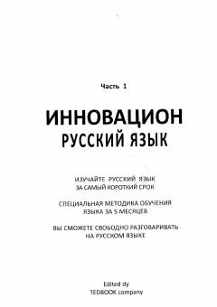

IRRus tilini grammatikasiz va tezkor usulda o'rganish uchun innovatsion qo'llanma.
Ushbu kitob rus tilini qisqa vaqt ichida, murakkab grammatik qoidalarsiz va yodlash mashqlarisiz o'rganishga mo'ljallangan innovatsion metodik qo'llanmadir. Kitob tinglash va kuzatish orqali tabiiy til o'zlashtirish jarayoniga asoslangan bo'lib, o'quvchilarga 5 oy ichida rus tilida ravon so'zlashish imkonini beradi.